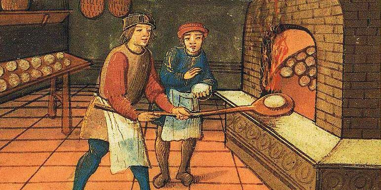
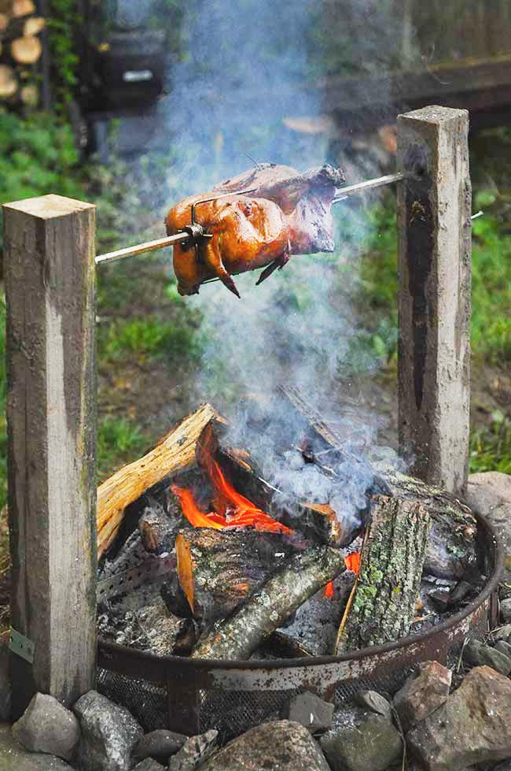
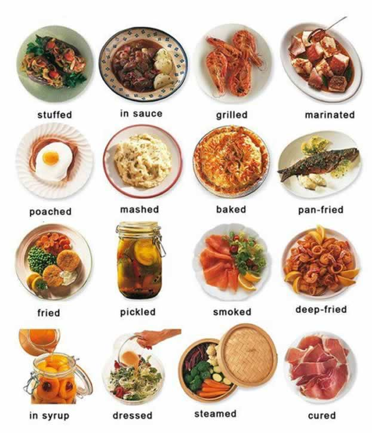
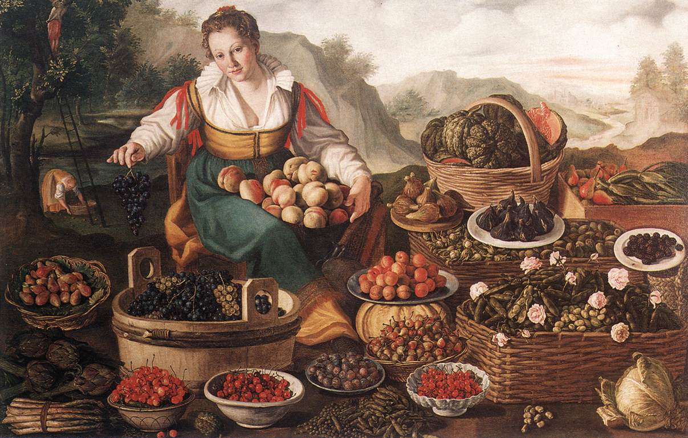
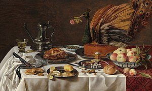
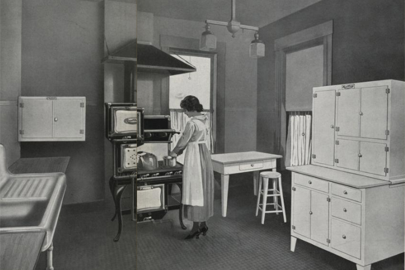

The History of Cooking: Order Up!
24 May 2021

Medieval peasants cooking dough in an ancient oven.
Food is one of the essential needs of every human. Food needs to be consumed by everyone in order to continue existing, or else we'd not be able to move or function. One of the main things that needs to be done to most foods is basic preparation. But, where did we first start to prepare food to make it safer/healthier? How has it changed to become safer and more effective to use over history? Finally, just how many ways can we prepare food? Well, we'll start answering those questions with the Neanderthals, the first people to ever prepare their food before eating it.
A chicken cooking over a fire pit, which is one of the oldest way to cook meats.
The earliest types of cooking don't really have dates due to them occurring much before we evolved into the common human being that we know today. The exact earliest form of cooking would likely happen unintentionally with the burning of animals in forest fires that humans decided to eat, as most early humans didn't know how to create fire, much less use it to make meat possibly better. Roasting spits were likely the most used method of cooking due to its simplicity, but some evidence also seems to support that ancient people in France used steaming by wrapping food in wet leaves and putting it on top of hot coals. The earliest compound dish (dish with several ingredients to make a new thing) was a crude paste that mixed water with the cracked kernels of wild grass. If this paste was toasted, it could be considered the first bread. No further advancements were made until the Neolithic period.
A chart that shows many types of food preparation.
With the creation of earthenware (more or less clay stuff), domestication of livestock, and cultivation of plants, food could be much further developed. The roasting spit was augmented by fired-clay vessels, and the techniques of boiling, stewing, braising, frying, and oven baking were all created due to all the possible things that could be made with clay. Early cooks likely also learned to preserve meats with smoking, salting, air-drying, or chilling them. The early cultivation of soybeans in China predates history, but it spread all over countries in Asia before written history. The soybean is still considered one of China's main five grains, with the other four being rice, barley, wheat, and millet.
Mesopotamia brought the main cultivation of livestock and plants, with crops like grains, barley, wheat, beans, peas, lentils, leeks, turnips, onions, radishes, and garlic being used around 3,000 BCE. The main animals that were cultivated were sheep, cattle, and ducks. The main animals that were hunted were pigs, deer, game birds, gazelle, and fish. When Egyptians began to domesticate animals and plants, many rich nobles began to get exquisite stews that were made up of many ingredients. Peasants' meals consisted of bread, onions, fruit, and beer. Beer was mostly easier to create than water due to the purification process of water not being fully discovered, and beer generally tasted better. Ancient Greek cooking was mostly frugal due to the lack of ingredients, and most cooking was done over open fires.

A painting that shows what the average Roman banquet would look like. Notice how there's only rich and lavish people participating in these.
The Roman empire made cooking into an absolute art form. During the 1st century CE, meals were replaced by more elaborate banquets, and chefs began to specialize in "disguising" food. Banquets were usually a way to flaunt wealth and strengthen bonds, along with showing off apathy to enemies that they had at these banquets. Wine was also a massive mainstay at these events. The earliest collection of recipes and survived in Europe were also written, and it's known as the Apicius or "De re coquinaria". The compilation was done between 300-400 CE.
In the Middle Ages, what you ate mostly depended on your status. During feasts, large numbers of guests were served different dishes of various courses depending on status. The rich always ate better than the poor, which still carries over to this day. The average man had no kitchen and mainly ate in bars or taverns, while in castles, monasteries, and palaces, there were huge kitchens that had all types of cooking wares and utensils. Larger houses often had bread made in large ovens, and their dinners included roasts, white bread, quarry, and custard/pudding. From 1400-1500 CE, spice trading became massively popular. and more ingredients and garnishes began to be added to dishes. Portuguese vessels reached South Africa, India, China, and many other countries to trade spices. They were generously used to create all-new savory and flavorful dishes.
This is "The Fruit Seller", a painting that depicts a woman who sells fruits. There's a large amount of fruits that she's selling, showing the increase of trade and how far it had come.
The Renaissance period brought about many famous cooks and notable advancements in cuisine. Italy was the main leader of the charge, with them having the most new food. The banquet tradition also continued into the Renaissance, with many new techniques being discovered to make them even more exquisite. Some of the foods available during the Renaissance would be pasta, bread, hard biscuits, wine, rice, cheese, pecorino, pizza (with no tomato sauce), sausages, omelets, meatballs, pork, fish, and small birds/game. People began to enjoy meat giblets, and soups and stews became a staple of cuisine that was eaten by all social classes. Cakes and flan were becoming popular dessert items, and olive oil began to be used in cooking. Most households began to produce their own cheese due to the excess of milk. Fruit and citrus became basic flavoring agents, with them being made into light sauces to be mixed into bread, flour, eggs, or almonds.
A painting depicting a large amount of early modern European cuisine. There's roast meat, bread, nuts, wine, apples, dried fruit, along with an elaborate meat pie that looks like a peacock. The painting is called "Still life with a peacock pie".
One of the biggest changes of the 17th century was the use of cast-iron ranges instead of open fireplaces, which used a lot less fuel and were much more effective. The first instance of cooling being used was in 1748 with William Cullen of the University of Glasgow produced refrigeration. It was successful, but it only became majorly used almost a full century later with the invention of the first refrigeration machine in 1844. The tin can was created in 1810 as the answer to preserving portable food for soldiers, and gas began to be used for cooking in the 1840's. The first modern version of a restaurant was created in Paris, with the soup salesman known as Boulanger opening it in 1765. It also brought about the creation of the word "restaurant". Just before the French Revolution in 1789, there were around 100 restaurants. These times also brought us classic fast food staples: The sandwich was first coined by John Montagu in 1762, and the Margherita pizza was created in 1889. The first hamburger and steak sandwich was sold in 1895. Cereal and margarine were also introduced in the 1860's, with Kellogg manufacturing toasted wheat flakes and other vegetarian foods. Margarine was initially developed using beef fat as its main ingredient.
A painting depicting the average 20th century kitchen. "Housewives" were primarily dedicated to working on these kitchens due to the American ideals of a family then.
During the 20th century, science and technology boomed, with food preparation/preservation being one of the main things effected. Processes like refrigeration, freezing, heating, and canning majorly improved, making food preservation easier than it had ever been before. The use of electricity in homes also began to pave the way for electric kitchen appliances like the microwave. The first electric range was also created in 1914, with many more like the potato chip slicer, mixer, waffle iron, coffee maker, and blender being created later down the line. Food preparation became much easier for even non-cooks, as packaged mixes made it easy to whip up anything in only a matter of minutes. For instance, things like coffee, pancakes, cookies, cakes, powdered milk, chocolate, gravy, and curry were the main powdered goods sold at stores.
Although the history of cooking is long and convoluted, new kitchen developments are still being made constantly. There's still lots of stuff to discover, but the stories of these inventions and developments are too much to just ignore, as they are the main reason why we can enjoy so many foods today.